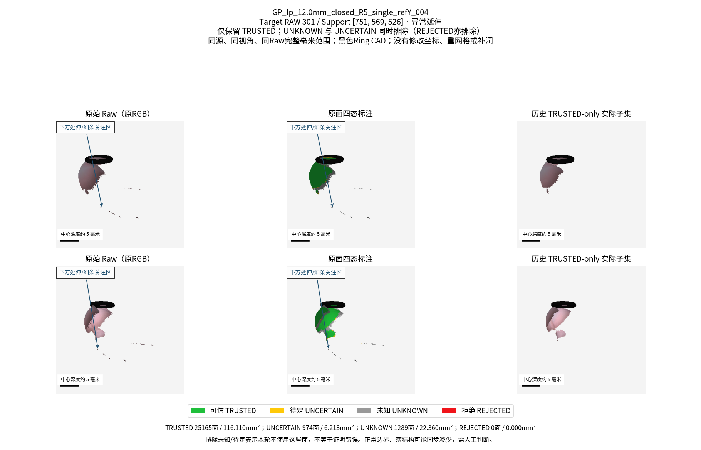
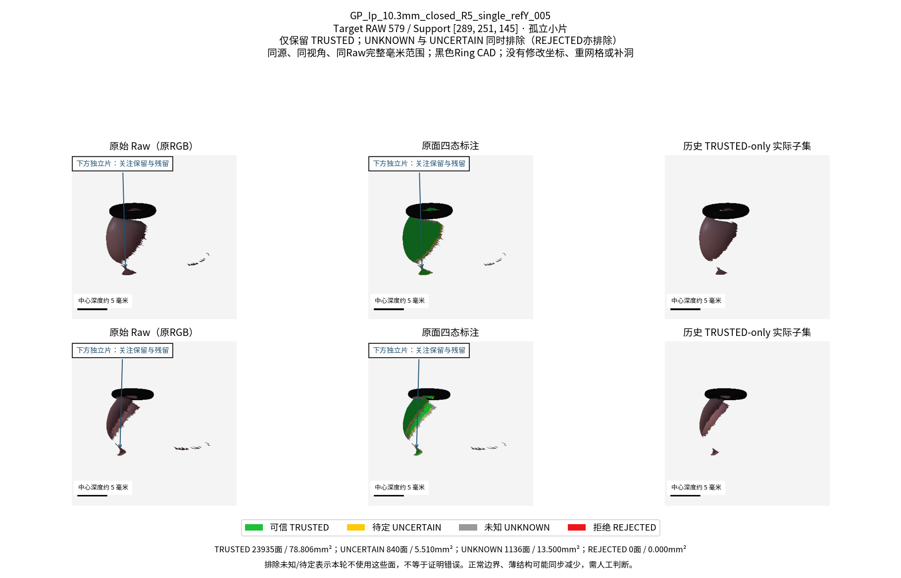
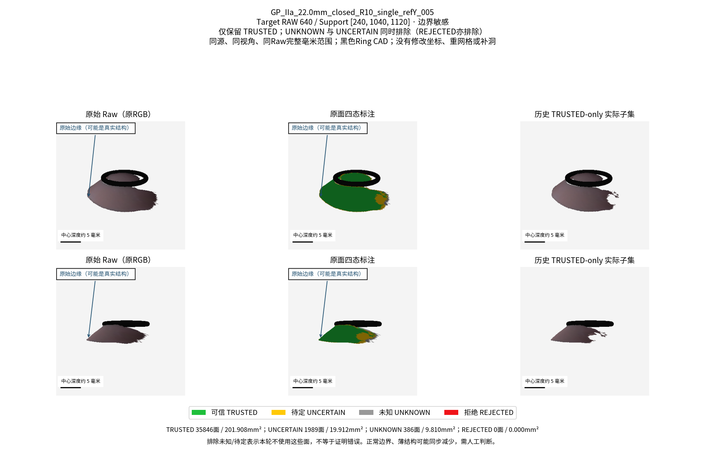
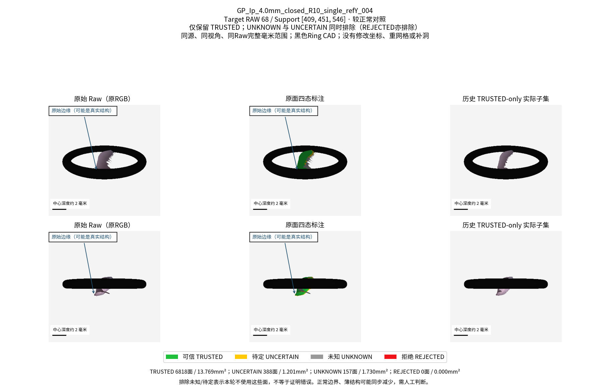

仅保留 TRUSTED；UNKNOWN、UNCERTAIN、REJECTED 同时排除。 四例REJECTED=0、确认gap边=0；删面来自未知与待定，不能视作已证实错误被移除。
中文技术报告 · 历史方法表 · 来源清单 · 面数/面积 · 验证回执 · 本地资产路径与哈希
检查时间 2026-11-26T16:06:15.319816+08:00（北京时间）。实际注册分母 39组、79视频（38组各2视频，Ip4/R5为3视频）。全量仍运行，以下均为阶段值：正常结束且有输出 28，正常结束无输出 16，失败 3，运行中 1，待运行 31，其他 0。已正常结束 44/79，含失败的已终结 47/79。
非空HERO输出 28视频、19组、523个单来源曲面；阶段视频输出覆盖率 28/79=35.44%，组覆盖率 19/39=48.72%。输出统计同时包含全量任务依法复用和新推理的来源；本轮4例全部为NEW。任务完成数、面源数、输出覆盖和几何正确性是不同量，以上不表示几何合格率。
当前阶段：GP_Ip_7.1mm_closed_R10_single_refY_004 / camera。最近日志更新时间 2026-11-26T16:06:08.915379+08:00，最近已检查产物更新时间 2026-11-26T16:06:04.727374+08:00；具体路径及日志尾部见 进度JSON，逐视频状态见 VIDEOS_FINAL.csv。快照为只读扫描，时间边界内队列可能推进，不是对运行器加锁的事务。
此页为本轮交付快照，不自动刷新；全量图集独立更新。
| 来源 | Raw 面/mm² | 可信 面/mm² | 待定 面/mm² | 未知 面/mm² | 拒绝 面/mm² | 面分量 Raw→可信 |
|---|---|---|---|---|---|---|
| Ip12 / R5 / 004 / RAW301 | 27428 / 144.682 | 25165 / 116.110 | 974 / 6.213 | 1289 / 22.360 | 0 / 0.000 | 16→3 |
| Ip10.3 / R5 / 005 / RAW579 | 25911 / 97.817 | 23935 / 78.806 | 840 / 5.510 | 1136 / 13.500 | 0 / 0.000 | 9→6 |
| IIa22 / R10 / 005 / RAW640 | 38221 / 231.631 | 35846 / 201.908 | 1989 / 19.912 | 386 / 9.810 | 0 / 0.000 | 3→8 |
| Ip4 / R10 / 004 / RAW68 | 7363 / 16.700 | 6818 / 13.769 | 388 / 1.201 | 157 / 1.730 | 0 / 0.000 | 1→1 |
共享整条边的三角面连通分量用于上表；仅接触一个顶点的不合并。JSON另保留共享顶点的components诊断，不能与此混用。未引用孤立顶点不计曲面分量。面积单位mm²；无GT，不报告清理正确率或误删率。
Support RAW [751, 569, 526]；Raw近景可见下方长延伸、离散小片；此Target完整范围21.5×16.9×15.4mm，原拓扑多分量

远处下方细条／小片在四态图中主要为灰色 UNKNOWN，少量黄色 UNCERTAIN；这些离散原分量在可信图中消失。原先最大的主面经筛选分成两个较大可信片（91.015、11.372 mm²），Ring附近原分量仍保留13.722 mm²，不能将分裂或孤片全部称为修复。图中下方仍有主面分离出的可信片。外缘及细窄连接也被削减，是否含真实结构须人工判断。
数值产物：/home/liu/ring_first_3d_workspace/runs/v6_trusted_clean_restore_001/source1/；原始大资产见来源清单，不在Git重复复制。
Support RAW [289, 251, 145]；Raw近景可见主体下方独立片和边缘细条；选择首个冻结Target观察这些原生分量

远处右下细碎片均为 UNKNOWN，导出后消失；但图中近主体下方的独立片含811个 TRUSTED 原面、3.565 mm²，仍然保留。这个原分量总面积6.341 mm²，另有0.862 mm² UNCERTAIN和1.914 mm² UNKNOWN被排除。因此“远端小片减少”可直接观察，“孤立片已清干净”不成立。原主面和Ring附近分量也有边缘缩减及少量分裂。
数值产物：/home/liu/ring_first_3d_workspace/runs/v6_trusted_clean_restore_001/source2/；原始大资产见来源清单，不在Git重复复制。
Support RAW [240, 1040, 1120]；宽浅曲面围绕Ring展开，外缘薄且有分隔；观察可信筛选对宽主面与正常边缘的影响

宽主面大部分为 TRUSTED；右缘较大的黄色 UNCERTAIN 区和灰色 UNKNOWN 区被排除，可信图出现明显缺口，少量细碎可信面仍在。共享边分量从3增至8，最大的两个为147.860和53.709 mm²，说明删面也增加了碎裂。左侧正常观感边缘同样退缩；缺口是否去掉伪面、是否误伤真实薄结构，当前没有真值可判定。
数值产物：/home/liu/ring_first_3d_workspace/runs/v6_trusted_clean_restore_001/source3/；原始大资产见来源清单，不在Git重复复制。
Support RAW [409, 451, 546]；Raw中体积紧凑、原面单连通；作为较正常对照，不按预计清理效果选取

较正常对照仍为一个面连通分量，主体形态保留；边缘黄色／灰色带仍被排除，总面积从16.700降至13.769 mm²（减少17.55%）。它说明“正常观感来源也会损失边界”，不能以画面更整齐或仍单连通证明没有误删。图中CAD遮挡面不能据这两个视角判真伪。
数值产物：/home/liu/ring_first_3d_workspace/runs/v6_trusted_clean_restore_001/source4/；原始大资产见来源清单，不在Git重复复制。
四个来源均为当前全量任务NEW推理，实际原面与坐标完整保存。没有GT正确率、没有自动推广全量。